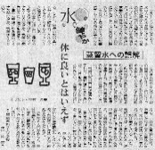

Free talk 雑談 .
（３３６）六員環水
水には硬水（こうすい）と軟水（なんすい）がある。硬水はカルシウムイオンやマグネシウムイオンを多く含んでいるので、体内に吸収されにくい。飲むと下痢を起こしたりする。そこで飲用にはカルシウムやマグネシウムの含有量が少ない軟水を用いる。と云うことぐらいは一般的知識だが、09.09.27の日経新聞14面に、興味深い記事が掲載されていた。
韓国科学技術院の金武植教授の研究によれば、水には水分子が５つ集まった五員体と五員環、６つ集まった六員環が存在する。そして六員環水は生理活性が高い。雪解け水は六員環水で生理活性がもっとも高い。云うなら「若返りの水」。しかし５日も経過すると次第に活性を失い、五員環水となる。この五員環水を煮沸や消毒すると五員体となり、活性はほとんど失われると考えられる。
という主旨の記事だった。な〜るへそ、世に言う○○の泉とか ○○水というのは六員環水のことかもと思いはべり。するとはるばる出かけて せっかく汲んできても、１週間も10日もそのままにしておいたら効効果が無くなってしまうことに....